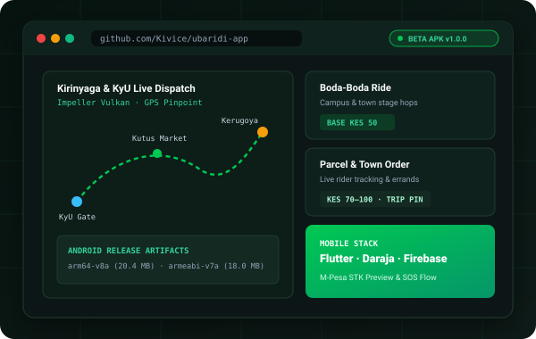

Ubaridi: Kirinyaga Ride, Parcel & Local Order Android App
Mobile transport, parcel delivery, and town errand platform built for Kirinyaga University (KyU), Kutus, Kerugoya, and Sagana. Compiled with Impeller Vulkan (~20 MB Android APKs), Street/Satellite map stage pins, Trip PIN verification, and M-Pesa Daraja checkout previews.
Flutter & Dart
Firebase
M-Pesa Daraja
Android APK
Impeller Vulkan